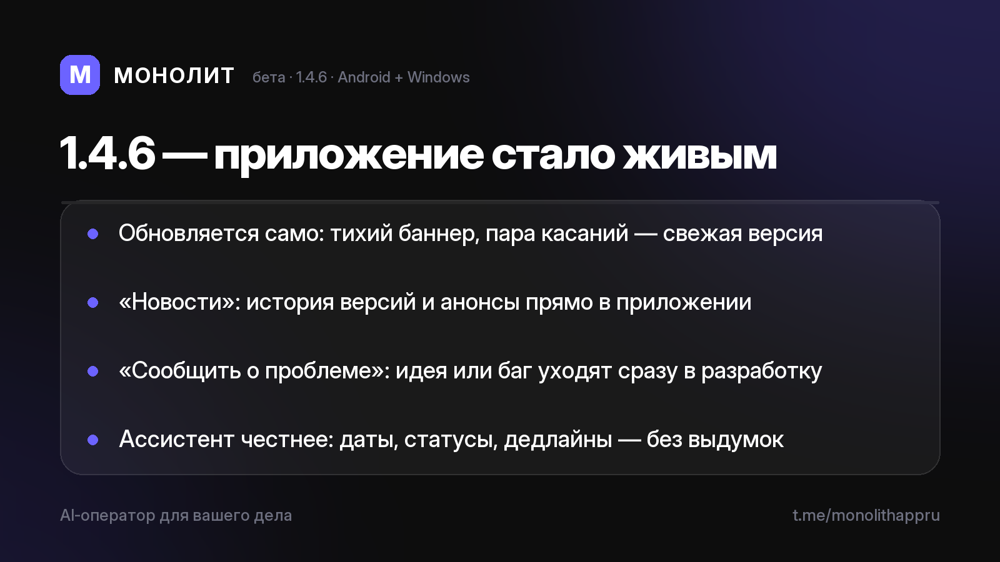

Дневник разработки · 19.07.2026
Приложение стало живым (1.4.6 beta)

Новая бета 1.4.6 🔄
Это последняя версия, которую нужно ставить руками. Дальше МОНОЛИТ обновляется сам.
Автообновление
Приложение раз в сутки тихо проверяет свежие версии. Вышла новая — под шапкой появляется тонкий баннер, на компьютере — аккуратный чип «Версия X». Пара касаний, и у тебя свежая сборка. Никаких «скачай файл, найди его, поставь поверх».
«Новости» внутри приложения
История версий и анонсы теперь живут прямо в приложении: что нового, что починили, что готовится. Профиль → Новости.
«Сообщить о проблеме»
Нашёл баг или есть идея — напиши прямо из приложения. Сообщение уходит в систему разработки и читается перед каждой рабочей сессией. Версия и платформа прикладываются сами.
Ассистент стал честнее
Знает сегодняшнюю дату, видит статусы и дедлайны задач, не приписывает себе несделанное. Короткий ответ вроде «выполнен» попадает именно в ту задачу, которую вы обсуждали.
Одна структура на телефоне и компьютере: общая база, общий синк, фичи выходят на обе платформы сразу. Приватность прежняя: сервер видит только зашифрованные данные, ключ остаётся у тебя.
Бета — в личку по запросу, бесплатно. Приложение в RuStore. Вопросы — @sbphotoshoter.
МОНОЛИТ — учёт заказов, клиентов и денег одной фразой. Windows и Android, бесплатная бета.
Скачать Читать канал